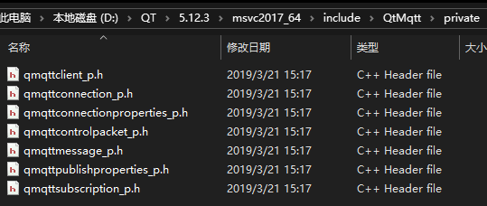

记录在qt下使用消息订阅mqtt。
qt官网有qtmqtt库。
1.mqtt本地服务器搭建
EMQX软件，我使用时5.3.2版本及之前才提供windows版本下载。
下载解压后，cmd cd到emqx/bin目录下:
1
2
3
4
5
6
7
8
9
10
| emqx install
#成功后界面上会ChangeServiceConfig 成功
#再运行
emqx console
#运行成功后会显示emqx is started!
#会自动打开某几个端口
Ctrl C退出
本地浏览器输入http:
初始用户名admin和用户密码public，即可进入控制面板，并进行MQTT服务器相关配置
|
2.MQTTX测试mqtt
MQTTX
MQTTX文档
Name和Client ID随意，Host填写我们本地配置的MQTT服务器地址127.0.0.1，端口号填1883。点击Connect即可连接到本地。
连接后，点击New Subscription创建topic，然后就可以在该topic下收发消息。
3.本地mqtt环境搭建(qt下)
qtmqtt
由于我qt版本是5.12.3，qtmqtt我也下载5.12.3，版本不对应时是否能用，没有测试。
下载后解压。
3.1首先在qt安装目录include文件夹下新建QtMqtt目录。
3.2将解压目录src/mqtt下的所有.h文件拷贝到上面新建目录下。
3.3所有_p.h结尾的头文件放到private文件夹下

3.4QtMqtt文件下包含所有头文件。
3.5打开.pro，然后编译
直接编译
将生成的lib文件夹下，这4个文件，拷贝到qt编译器对应的目录lib目录下：
将生成的bin文件夹下，dll拷贝到qt编译器对应的bin目录下：
将mkspecs/modules-inst下的文件,拷贝到qt编译器目录mkspecs/modules下
将lib/cmake文件夹,拷贝到qt编译器目录lib/cmake下

3.1使用
qtmqtt使用文档
在.pro中添加模块
引入包：
1
| #include <QtMqtt/qmqttclient.h>
|
.h
1
2
3
4
5
6
7
8
9
10
11
12
13
14
15
16
17
18
19
20
21
22
23
24
25
26
27
28
29
30
31
32
33
34
35
36
37
38
39
40
41
| #ifndef MAINWINDOW_H
#define MAINWINDOW_H
#include <QMainWindow>
#include<QtMqtt/qmqttclient.h>
#include <QDateTime>
namespace Ui {
class MainWindow;
}
class MainWindow : public QMainWindow
{
Q_OBJECT
public:
explicit MainWindow(QWidget *parent = nullptr);
~MainWindow();
void MyMQTTSubscribe(QString);
void MyMQTTSendMessage(const QString, const QString);
public slots:
void brokerConnected();
void updateLogStateChange();
void brokerDisconnected();
void receiveMess(const QByteArray &, const QMqttTopicName &);
private slots:
void on_pushButton_clicked();
void on_pushButton_2_clicked();
private:
Ui::MainWindow *ui;
QMqttClient*m_client;
};
#endif
|
.cpp
1
2
3
4
5
6
7
8
9
10
11
12
13
14
15
16
17
18
19
20
21
22
23
24
25
26
27
28
29
30
31
32
33
34
35
36
37
38
39
40
41
42
43
44
45
46
47
48
49
50
51
52
53
54
55
56
57
58
59
60
61
62
63
64
65
66
67
68
69
70
71
72
73
74
75
76
77
78
79
80
81
82
83
84
85
86
87
88
89
| #include "mainwindow.h"
#include "ui_mainwindow.h"
MainWindow::MainWindow(QWidget *parent) :
QMainWindow(parent),
ui(new Ui::MainWindow)
{
ui->setupUi(this);
m_client=new QMqttClient;
m_client->setHostname("127.0.0.1");
m_client->setPort(1883);
m_client->connectToHost();
connect(m_client,&QMqttClient::connected,this,&MainWindow::brokerConnected);
connect(m_client, &QMqttClient::stateChanged, this, &MainWindow::updateLogStateChange);
connect(m_client, &QMqttClient::disconnected, this, &MainWindow::brokerDisconnected);
connect(m_client, &QMqttClient::pingResponseReceived, this, []() {
const QString content = QDateTime::currentDateTime().toString()
+ QLatin1String(" PingResponse")
+ QLatin1Char('\n');
qDebug() << content;
});
}
MainWindow::~MainWindow()
{
delete ui;
}
void MainWindow::updateLogStateChange()
{
const QString content = QDateTime::currentDateTime().toString()
+ QLatin1String(": State Change")
+ QString::number(m_client->state())
+ QLatin1Char('\n');
qDebug() << content;
}
void MainWindow::brokerConnected()
{
qDebug() << "Connected!";
if(m_client->state() == QMqttClient::Connected){
connect(m_client, SIGNAL(messageReceived(QByteArray,QMqttTopicName)), this, SLOT(receiveMess(QByteArray,QMqttTopicName)));
}
}
void MainWindow::brokerDisconnected()
{
qDebug() << "Disconnected!";
}
void MainWindow::receiveMess(const QByteArray &message, const QMqttTopicName &topic)
{
QString content;
content = QDateTime::currentDateTime().toString() + QLatin1Char('\n');
content += QLatin1String(" Received Topic: ") + topic.name() + QLatin1Char('\n');
content += QLatin1String(" Message: ") + message + QLatin1Char('\n');
qDebug() << content;
}
void MainWindow::MyMQTTSubscribe(QString str)
{
auto subscription = m_client->subscribe(str, 0);
if (!subscription) {
qDebug() << "Could not subscribe. Is there a valid connection?";
return;
}
}
void MainWindow::MyMQTTSendMessage(const QString topic, const QString message)
{
if (m_client->publish(topic, message.toUtf8()) == -1){
qDebug() << "Could not publish message";
}
}
void MainWindow::on_pushButton_clicked()
{
if (m_client->state() == QMqttClient::Disconnected)
{
qDebug() << " not connect";
}
MyMQTTSubscribe("11");
}
void MainWindow::on_pushButton_2_clicked()
{
MyMQTTSendMessage("12","world");
}
|